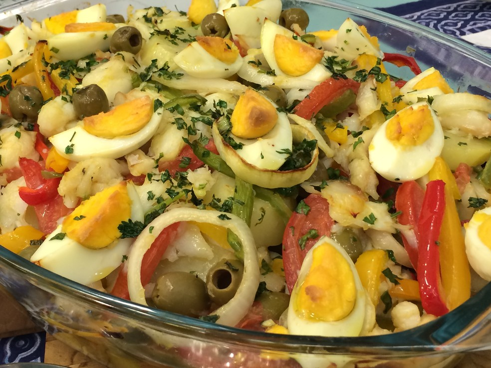

Peru de Natal
Delicioso peru de natal.
Ingredientes: 1 peru de cerca de 5 a 6 kg
Sal e pimenta a gosto
1 xícara de manteiga derretida
2 colheres de sopa de azeite de oliva
2 cebolas, descascadas e cortadas em quartos
4 dentes de alho, picados
1 limão, cortado ao meio
1 laranja, cortada ao meio
2 ramos de alecrim fresco
2 ramos de tomilho fresco
Recheio:
250g de miúdos de peru (fígado, coração, moela), picados
2 xícaras de miolo de pão, cortado em cubos
1 cebola, picada
2 colheres de sopa de manteiga
1/2 xícara de caldo de galinha
Sal, pimenta, e ervas a gosto (sálvia, tomilho, alecrim).
Modo de fazer:Pré-aqueça o forno a 180°C.
Prepare o recheio: Em uma panela grande, derreta 2 colheres de sopa de manteiga e refogue a cebola até ficar macia. Adicione os miúdos de peru picados e cozinhe até que estejam dourados. Acrescente o miolo de pão e caldo de galinha, misture bem e tempere com sal, pimenta e ervas a gosto. Reserve.
Enxágue o peru em água fria e seque-o com papel toalha. Tempere o interior do peru com sal e pimenta.
Preencha a cavidade do peru com o recheio preparado. Costure a abertura com barbante de cozinha ou prenda com palitos de madeira.
Coloque o peru em uma assadeira grande. Regue-o com a manteiga derretida e azeite de oliva. Tempere a parte externa com sal e pimenta.
Coloque as cebolas, alho, limão, laranja, alecrim e tomilho ao redor do peru na assadeira.
Cubra o peru com papel alumínio e asse no forno pré-aquecido por cerca de 3 horas, regando o peru com o caldo da assadeira a cada 30 minutos.
Após 3 horas, remova o papel alumínio e asse o peru por mais 1 a 1,5 horas ou até que um termômetro de carne inserido na parte mais espessa da coxa registre 75°C.
Retire o peru do forno e deixe descansar por 30 minutos antes de cortar e servir.
Enquanto o peru descansa, você pode fazer um molho com os sucos da assadeira, se desejar.
Retire o excesso de gordura da assadeira, aqueça os sucos e engrosse-os com um pouco de amido de milho..
Bacalhoada

Deliciosa bacalhoada com o verdadeiro bacalhau do Porto.
Ingredientes: 1 quilo de batata média ou pequena,
800g de bacalhau em postas ou lombos,
3 cebolas médias,
4 tomates médios,
½ pimentão vermelho,
½ pimentão verde,
½ pimentão amarelo,
4 ovos,
1 xícara de azeite de oliva virgem extra,
1 xícara de azeitonas pretas,
cheiro verde picado, pimenta do reino e sal a gosto.
Modo de fazer:1. Comece por cozinhar o bacalhau e os ovos numa panela com água até cobrir, no fogo médio durante 10-15 minutos. Você saberá que o bacalhau está pronto quando as lascas de bacalhau separam facilmente.
2. Escorra a água da panela e deixe os ingredientes esfriar um pouco. Enquanto o bacalhau ainda está morno, retire os espinhos e as peles e, em seguida, descasque os ovos e corte-os em rodelas. Reserve.
3. Em seguida higienize os legumes e prepare-os: descasque as cebolas e as batatas e retire o caule dos pimentões. Corte estes legumes e também os tomates em rodelas, sem esquecer de retirar as sementes dos pimentões.
4. Ferva as rodelas de batata por 5 minutos no fogo alto, para que cozinhem mais depressa no forno e se mantenham macias. Escorra as batatas e coloque numa assadeira untada com azeite. Tempere com sal e pimenta a gosto e coloque um fio de azeite.
5. Arrume o bacalhau em postas ou lombos sobre as batatas e decore com as rodelas de ovo, tomates, cebolas e pimentões por cima e em redor. Regue com azeite abundantemente, polvilhe sal e pimenta do reino e cubra com papel alumínio. Leve ao forno a 200ºC durante 20-30 minutos.
6. Depois do tempo indicado retire o papel alumínio e deixe a bacalhoada à portuguesa tradicional no forno por 10 minutos, somente para dourar. Sirva com azeitonas e cheiro verde picado.